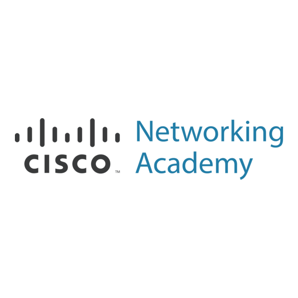
4 certifications
Cisco Networking Academy
Réseaux et cybersécurité : bases des réseaux, support et sécurité, menaces et sécurité offensive.
Étudiant en BTS SIO – option SISR
Alternant technicien infogérance chez Axians. Passionné par les réseaux, la cybersécurité et l'administration systèmes.
Découvre mon parcours
Salut, moi c'est Imran Poumalis
Je suis actuellement étudiant au lycée Dick Ukeiwé en deuxième année de BTS SIO (option SISR).
Je me spécialise dans les solutions d'infrastructure, systèmes et réseaux. Mon parcours me permet d'acquérir des compétences en système & réseaux et en sécurité informatique. Actuellement en alternance, j'allie théorie et pratique pour développer encore plus mon experience.
Télécharger mon CVLe BTS Services Informatiques aux Organisations est une formation en deux ans qui prépare aux métiers de l'informatique

Lycée Blaise-Pascal
Baccalauréat

Lycée Dick Ukeiwé
Formation spécialisée en Solutions d'Infrastructure, Systèmes et Réseaux
Édition 2025

Axians
Découverte du monde professionnel et des métiers de l'informatique
Missions :
Axians
Édition 2026
Les compétences développées en formation, en entreprise et sur mes projets, classées par domaine.
Bases solides du réseau (modèle TCP/IP, routage, VLAN, adressage IP) pour comprendre et configurer des environnements réseau simples à intermédiaires.
Création et isolation de VLAN par section, filtrage entre VLAN avec des listes de contrôle d'accès (ACL) et des règles de pare-feu.
Simulation d'architectures réseau et configuration d'équipements Cisco lors de nombreux TP.
Configuration d'un routeur MikroTik RB2011 : VLAN, règles de pare-feu et filtrage.
Environnement Linux, commandes essentielles, administration système, gestion des droits, des paquets et des services.
Création et gestion de machines virtuelles pour tester différentes configurations réseaux et systèmes.
Serveur PXE sur ESXi pour installer Linux ou Windows sans support physique, avec une image ISO Windows amorçable personnalisée.
Connexion en SSH, Telnet ou liaison série aux serveurs, routeurs et commutateurs.
Gestion et création de tickets en entreprise comme en cours : suivi d'un ticket du début à la résolution et support utilisateur organisé.
Inventaire automatique des équipements, des logiciels et des configurations, relié à GLPI pour la traçabilité.
Supervision des matériels informatiques de l'entreprise et de ses clients (stage chez Axians).
Déploiement de téléphones IP avec la plateforme de communication 3CX (stage chez Axians).
Inventaire des actifs, identification des actifs critiques, analyse des vulnérabilités et des risques (projet Fil Rouge, équipe 1).
Découverte des machines actives, des ports ouverts et des services qui tournent derrière.
Capture et décodage des trames pour diagnostiquer un problème de communication ou de sécurité.
Notions sur les menaces, les vulnérabilités et la sécurité offensive (certifications Cisco Networking Academy).
Création de ce portfolio : mise en page responsive, navigation par onglets, animations et formulaire de contact.
Versionnage du code et publication d'un site statique avec GitHub Pages.
Mon éditeur de référence pour mes projets personnels, mes cours et certaines tâches professionnelles, avec ses extensions.
Mes formations et attestations

Réseaux et cybersécurité : bases des réseaux, support et sécurité, menaces et sécurité offensive.
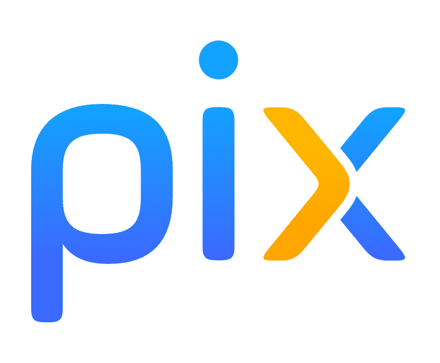
Certification officielle des compétences numériques, évaluées sur cinq domaines : informations et données, communication, création de contenu, protection et sécurité, environnement numérique.
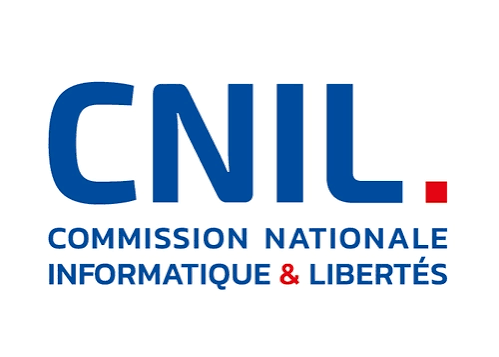
Certification afin de s'initier et de se perfectionner sur le Règlement Général sur la Protection des Données
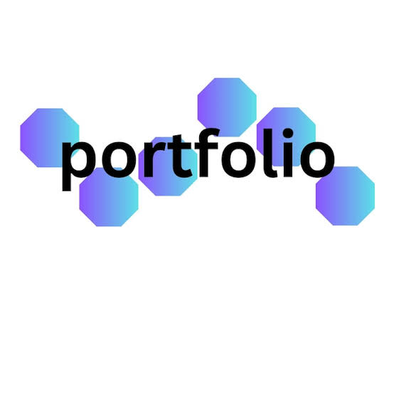
Création de ce portfolio personnel en HTML/CSS/JS pour présenter mes compétences BTS SIO.
Dans le cadre du BTS SIO, j'avais besoin d'un support pour présenter mon parcours, mes certifications, mes projets et ma veille technologique, accessible en ligne à tout moment.
Code versionné avec Git, hébergé sur GitHub et publié gratuitement avec GitHub Pages.
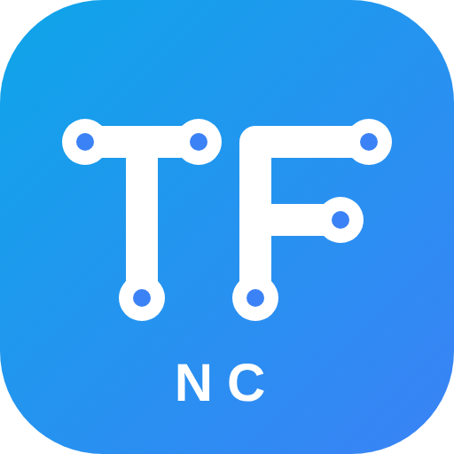
Projet de l'année du BTS SIO SISR (session 2026, Nouvelle-Calédonie) : une même entreprise, TechForm NC, sert de fil conducteur. Les 18 étudiants SISR, répartis en 6 équipes de 3, construisent et sécurisent ensemble son système d'information, la cybersécurité étant le principe directeur de chaque décision. Je fais partie de l'équipe 1, Audit & Inventaire.
Les pare-feu, l'IDS et les agents des postes envoient leurs journaux au SIEM central (syslog, agents). Le SIEM alimente ensuite une archive froide longue durée, avec contrôle d'intégrité (sha256). L'équipe 6 la consulte en lecture seule pour mener l'investigation.
Cohérence technique de l'architecture, justification des choix de cybersécurité, lien avec la réglementation (RGPD), qualité des livrables et posture professionnelle. Chaque choix doit pouvoir être défendu devant le jury de l'épreuve E5, dans l'esprit d'un administrateur responsable.
Nos missions :
Mise en situation professionnelle autour de TechForm NC (épreuve E6 du BTS SIO, option SISR), au sein de l'équipe Audit & Inventaire.
Dans le même scénario, TP de segmentation et de filtrage réseau : VLAN par section (Admin, SISR, SLAM, Labo) et listes de contrôle d'accès (ACL) sur du matériel Cisco, MikroTik et TP-Link.
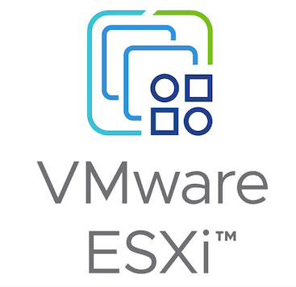
Objectif : mettre en place un serveur de démarrage réseau (PXE) permettant de déployer des images système (Linux, Windows) sur plusieurs machines simultanément, sans support physique (USB/DVD), dans un environnement virtualisé ESXi.
Projet réalisé chez Axians : déployer des postes sans clé USB ni DVD, directement depuis le réseau, depuis un serveur de démarrage PXE.

Outil de simulation qui nous a permis de créer des infrastructures réseaux. J'ai réalisé de nombreux TP pour maîtriser la configuration des équipements Cisco.

Nmap permet de répondre à des questions essentielles : Quelles machines sont actives sur le réseau ? (découverte d'hôtes) Quels ports sont ouverts sur ces machines ? (scan de ports) Quels services tournent derrière ces ports ? (détection de services).

Outil d'inventaire et de gestion de parc informatique. OCS Inventory permet de recenser automatiquement l'ensemble des équipements (PC, serveurs, périphériques) d'une infrastructure, ainsi que leurs logiciels et configurations matérielles.

Solution de gestion des services informatiques (ITSM) et de gestion des parcs informatiques. GLPI permet de gérer les tickets d'incidents, les demandes d'assistance, les contrats, les factures et les inventaires matériels et logiciels.
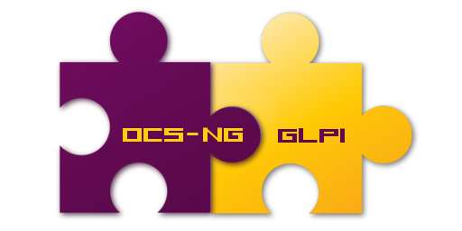
Synergie entre OCS Inventory et GLPI : OCS collecte les informations du parc informatique (matériel, logiciels) et GLPI les exploite pour la gestion des tickets, des interventions et la traçabilité des équipements. Une solution complète pour l'administration des systèmes d'information.
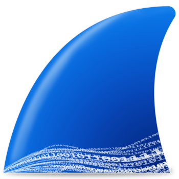
Analyseur de protocoles qui capture et décode le trafic réseau en temps réel. Il permet d'observer les trames échangées (ARP, DHCP, DNS, TCP, HTTP…), d'appliquer des filtres et de diagnostiquer un problème de communication ou de sécurité.
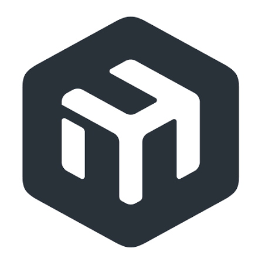
Utilitaire d'administration graphique des routeurs MikroTik (RouterOS). Je l'ai utilisé pour configurer un routeur MikroTik RB2011 lors de mes TP : création de VLAN, règles de pare-feu et filtrage.
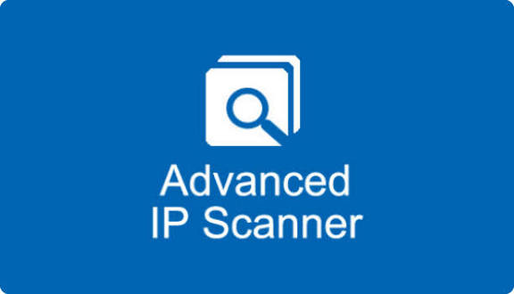
Scanner réseau gratuit pour Windows. Il détecte rapidement les équipements connectés à un réseau local et affiche leur adresse IP, leur adresse MAC, leur nom et leurs dossiers partagés, avec des actions à distance comme le Wake-on-LAN.
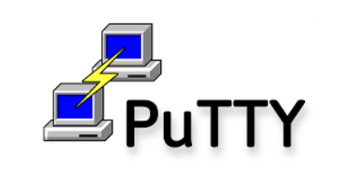
Client SSH, Telnet et liaison série pour se connecter en ligne de commande à distance. Il permet d'administrer des serveurs Linux, des routeurs et des commutateurs, ou d'y accéder en console.
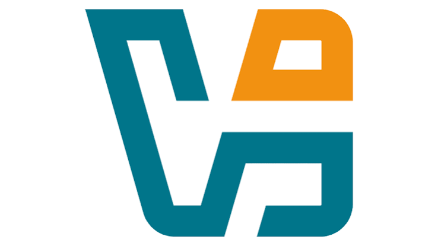
Logiciel de virtualisation gratuit d'Oracle. Il permet de créer des machines virtuelles (Linux, Windows), de prendre des instantanés et de configurer différents modes réseau (NAT, accès par pont, réseau interne) pour tester des infrastructures.
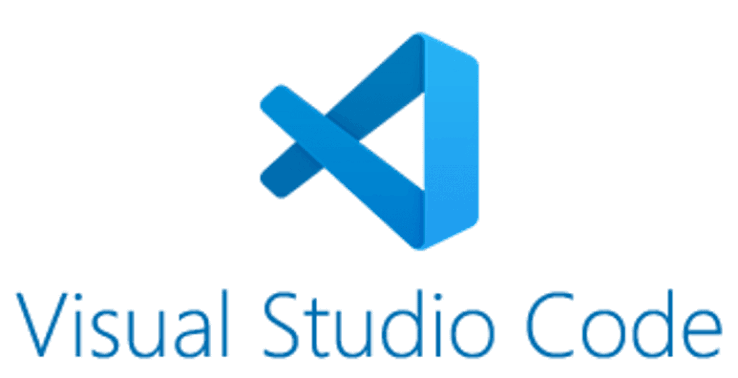
Éditeur de code gratuit de Microsoft, léger et extensible. C'est mon éditeur de référence pour mes projets, mes cours et certaines tâches professionnelles : coloration syntaxique, terminal intégré, gestion de Git et extensions pour HTML, CSS, JavaScript ou les scripts.
Hyperviseur installé directement sur un serveur physique pour héberger plusieurs machines virtuelles. Je l'ai utilisé chez Axians pour héberger les machines de mon projet de serveur PXE, avec un réseau virtuel isolé dédié au déploiement.
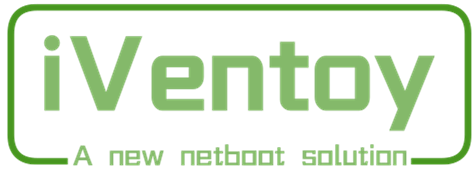
Outil gratuit de démarrage réseau (PXE) qui permet d'installer des systèmes (Linux, Windows) sur plusieurs machines à partir d'images ISO, sans clé USB ni DVD. Je l'ai mis en place sur une machine Ubuntu dans mon projet chez Axians.

75 Avenue du Maréchal Foch, Immeuble JOMALO
pweevo.230607@gmail.com
+687 84.64.12
Parcours en ligne sur les réseaux et la cybersécurité, classés par thème.

Commencez à apprendre les bases des réseaux informatiques et découvrez le fonctionnement des réseaux.

Développez vos compétences en matière de dépannage réseau et de contrôle d'accès des utilisateurs pour commencer votre carrière dans la technologie.
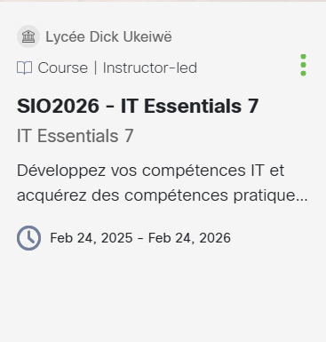
Comprendre les menaces, les vulnérabilités et les attaques qui visent les systèmes d’information.

Apprenez l'art de la sécurité offensive pour découvrir les cybermenaces et les vulnérabilités avant les cybercriminels.
Certification officielle des compétences numériques.
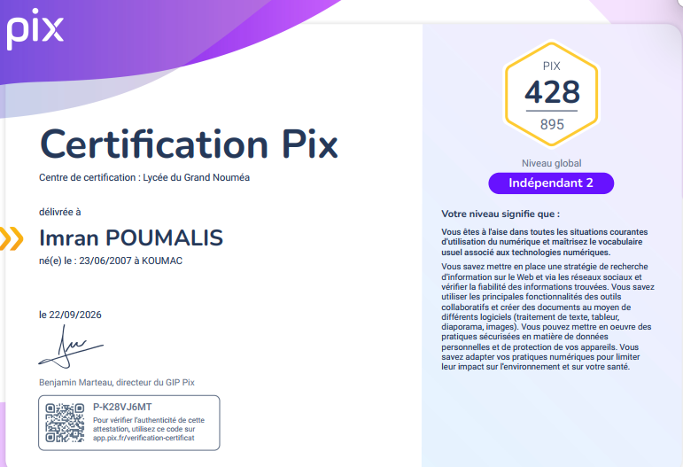
Certification des compétences numériques.
Certification des compétences en matière de protection des données personnelles.
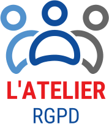
Certification des compétences en matière de protection des données personnelles.